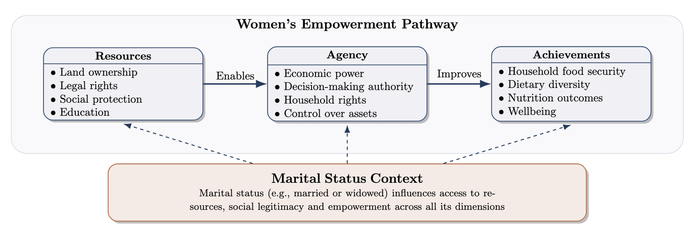
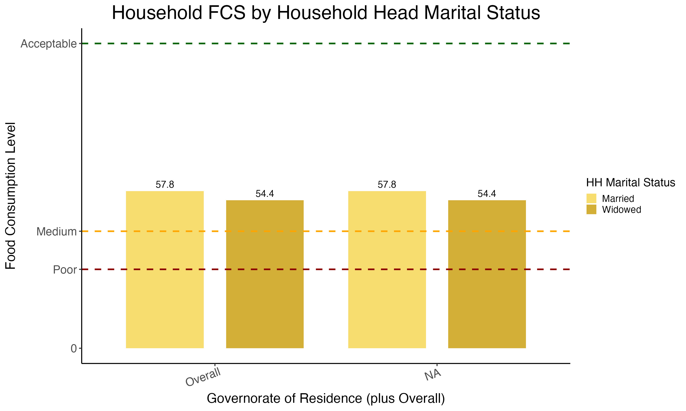
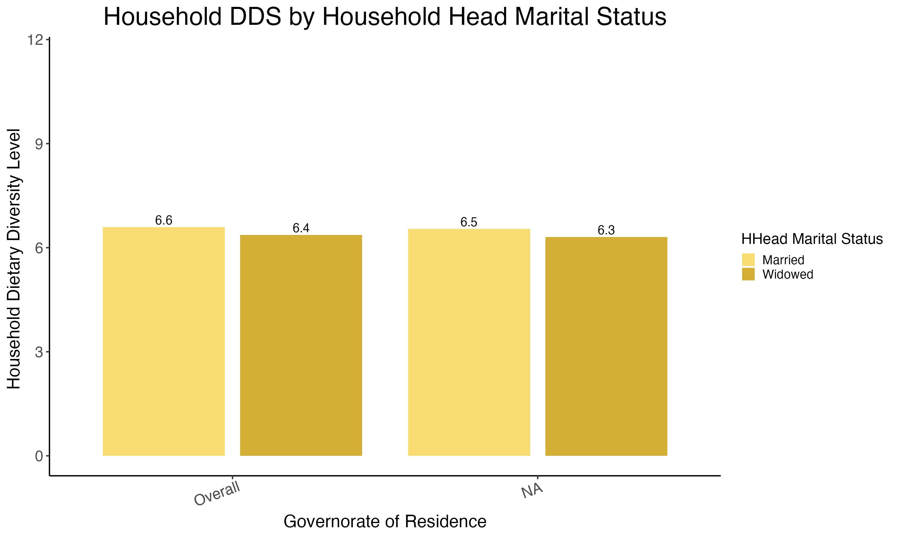

RESEARCH PROJECT · MASTER'S THESIS · 2025
Empowering Women, Securing Food: How Patriarchal Norms and Marital Status Shape Women’s Access to Resources and Food Security in Syria
An econometric study of marital status, productive resources and household food security among female-headed households in conflict-affected Syria.

This thesis examines whether female household headship translates into meaningful empowerment when access to land, education and social protection remains shaped by patriarchal institutions and conflict. Using household survey data from Syria, I investigate how widowhood and productive resources relate to three complementary dimensions of food security.
Research question & hypotheses
Research question: How does marital status shape the relationship between women's access to resources and household food security in conflict-affected Syria?
Drawing on a framework of resources, agency and achievements, the study treats marital status as a structural condition that may influence women's ability to turn productive assets and education into improved household welfare.
- H1: Widowed women are more likely to experience household food insecurity than married women.
- H2a: Land ownership is associated with reduced household food insecurity.
- H2b: The food-security benefits of land ownership are stronger for widowed women.
- H3a: Women's education is associated with reduced household food insecurity.
- H3b: The food-security benefits of education are stronger for widowed women.
Research design & data
The study uses anonymized agricultural household survey data from five Syrian governorates—Hama, Deir-ez-Zor, Aleppo, Homs and Rural Damascus—collected in March 2023 and March 2024. The source data follow households over two waves; the thesis analyses the combined observations using pooled regressions.
Starting from 3,374 household observations, I restricted the sample to female-headed households, then to married or widowed heads, and excluded records with incomplete relevant variables. The final analytical sample comprises 932 observations.


Measurement & empirical strategy
Food security is multidimensional, so I constructed and analysed three indicators capturing different aspects of household food access and responses to scarcity:
Explanatory variables include marital status (married versus widowed), land access and size, and education. Interaction terms test whether the associations of land and education with food-security outcomes differ by marital status. Standard errors are clustered at household level to account partly for repeated observations.
The pooled OLS design estimates conditional associations, not causal effects. Using three outcomes allows the analysis to distinguish dietary diversity, food consumption and coping responses rather than relying on a single measure.
Key findings
- Widowhood and food consumption: widowed household heads had FCS scores approximately 3.4 points lower than married heads in the adjusted pooled model (β = −3.4; p = 0.004).
- Land and dietary diversity: a one-unit increase in logged land size was associated with 0.14 higher HDDS (p = 0.017).
- Land and coping strategies: logged land size was associated with 0.44 lower rCSI (p = 0.020), consistent with reduced reliance on food-related coping behaviours.
- Education and interactions: education was not consistently associated with improved food-security outcomes; the hypothesized additional benefits of land and education for widows were not robustly supported by the interaction models.


Discussion & limitations
The findings suggest that household headship alone does not guarantee access to the resources needed for food security. Widowhood is associated with greater vulnerability in food consumption, while land access appears to be an important protective resource. The absence of consistent education effects points to constraints on translating individual capabilities into material welfare in a conflict-affected setting.
These results are observational. Pooled OLS cannot eliminate unobserved household characteristics or selection bias, and clustering standard errors does not resolve those identification limitations. The sample is restricted to female-headed agricultural households in selected Syrian governorates, limiting generalizability. The results motivate gender-sensitive support that addresses access to productive resources alongside wider institutional barriers.